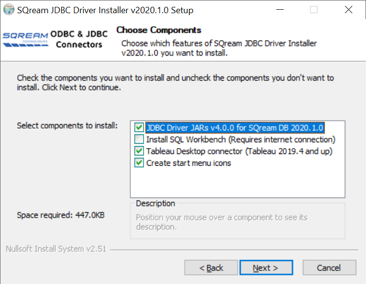
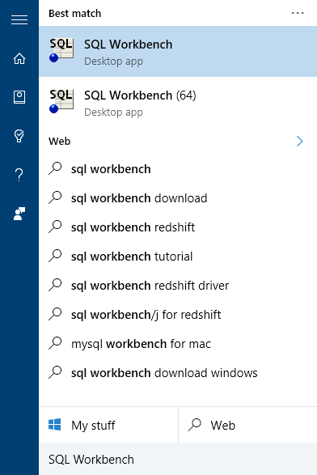
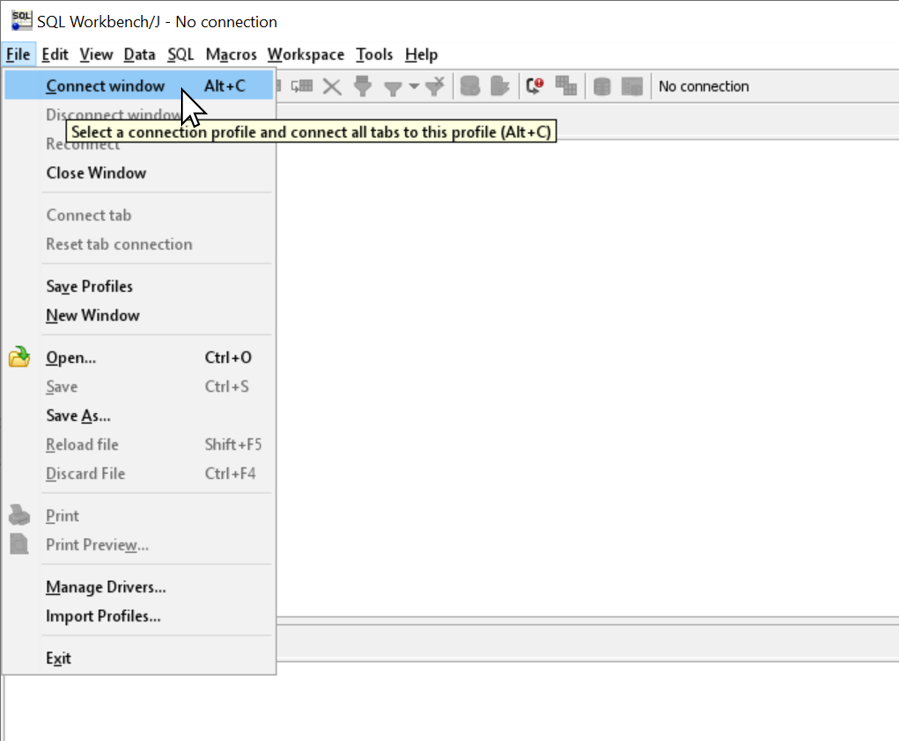
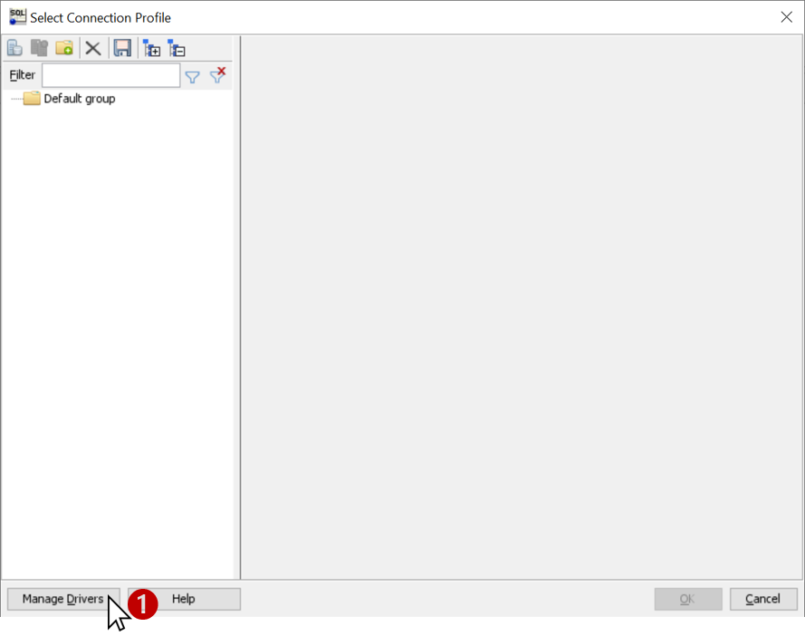
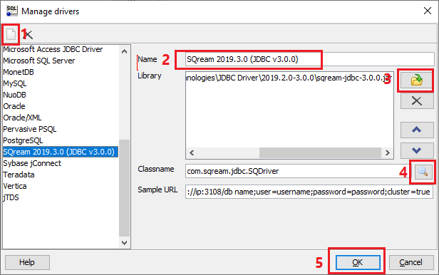
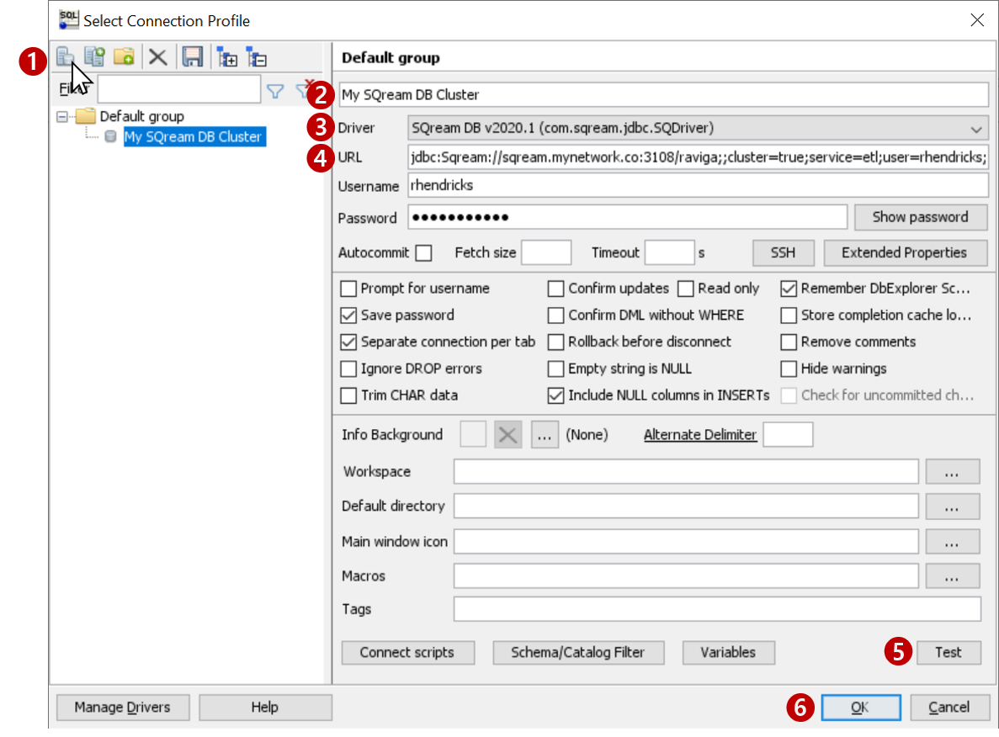

Connect to SQream Using SQL Workbench
You can use SQL Workbench to interact with a SQream DB cluster. SQL Workbench/J is a free SQL query tool, and is designed to run on any JRE-enabled environment.
This tutorial is a guide that will show you how to connect SQL Workbench to SQream DB.
In this topic:
Installing SQL Workbench with the SQream Installer
This section applies to Windows only.
SQream DB’s driver installer for Windows can install the Java prerequisites and SQL Workbench for you.
Get the JDBC driver installer available for download from the SQream Drivers page. The Windows installer takes care of the Java prerequisites and subsequent configuration.
Install the driver by following the on-screen instructions in the easy-to-follow installer. By default, the installer does not install SQL Workbench. Make sure to select the item!

Note
The installer will install SQL Workbench in C:\Program Files\SQream Technologies\SQLWorkbench by default. You can change this path during the installation.
Once finished, SQL Workbench is installed and contains the necessary configuration for connecting to SQream DB clusters.
Start SQL Workbench from the Windows start menu. Be sure to select SQL Workbench (64) if you’re on 64-bit Windows.

You are now ready to create a profile for your cluster. Continue to Creating a new connection profile.
Installing SQL Workbench Manually
This section applies to Linux and MacOS only.
Install Java Runtime
Both SQL Workbench and the SQream DB JDBC driver require Java 1.8 or newer. You can install either Oracle Java or OpenJDK.
Oracle Java
Download and install Java 8 from Oracle for your platform - https://www.java.com/en/download/manual.jsp
OpenJDK
For Linux and BSD, see https://openjdk.java.net/install/
For Windows, SQream recommends Zulu 8 https://www.azul.com/downloads/zulu-community/?&version=java-8-lts&architecture=x86-64-bit&package=jdk
Get the SQream DB JDBC Driver
SQream DB’s JDBC driver is provided as a zipped JAR file, available for download from the SQream Drivers page.
Download and extract the JAR file from the zip archive.
Install SQL Workbench
Download the latest stable release from https://www.sql-workbench.eu/downloads.html . The Generic package for all systems is recommended.
Extract the downloaded ZIP archive into a directory of your choice.
Start SQL workbench. If you are using 64 bit windows, run
SQLWorkbench64.exeinstead ofSQLWOrkbench.exe.
Setting up the SQream DB JDBC Driver Profile
Define a connection profile -
Open the drivers management window -
Create the SQream DB driver profile
Click on the Add new driver button (“New” icon)
Name the driver as you see fit. We recommend calling it SQream DB <version>, where <version> is the version you have installed.
Add the JDBC drivers from the location where you extracted the SQream DB JDBC JAR.
If you used the SQream installer, the file will be in
C:\Program Files\SQream Technologies\JDBC Driver\Click the magnifying glass button to detect the classname automatically. Other details are purely optional
Click OK to save and return to “new connection screen”
Create a New Connection Profile for Your Cluster

Create new connection by clicking the New icon (top left)
Give your connection a descriptive name
Select the SQream Driver that was created in the previous screen
Type in your connection string. To find out more about your connection string (URL), see the Connection string documentation.
Text the connection details
Click OK to save the connection profile and connect to SQream DB
Suggested Optional Configuration
If you installed SQL Workbench manually, you can set a customization to help SQL Workbench show information correctly in the DB Explorer panel.
Locate your workbench.settings file On Windows, typically:
C:\Users\<user name>\.sqlworkbench\workbench.settingsOn Linux,$HOME/.sqlworkbenchAdd the following line at the end of the file:
workbench.db.sqreamdb.schema.retrieve.change.catalog=true
Save the file and restart SQL Workbench